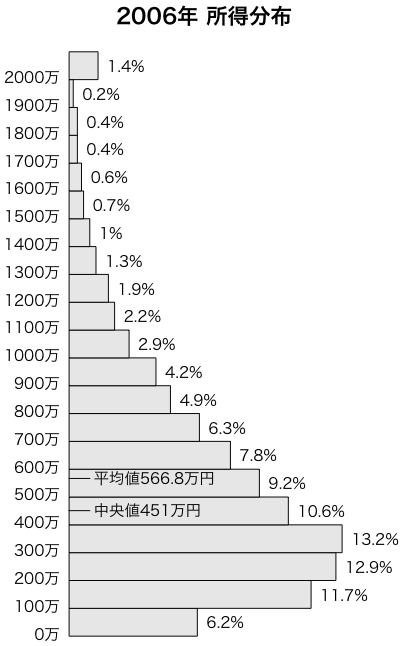

厚生労働省：平成１９年国民生活基礎調査の概況の訂正についての年次別の所得の状況にある2006年（平成18年）1月1日から12月31日までの1世帯あたりの所得の分布です。

# quartz(width=4.785433, height=7.632874) # Mac
# par(family="HiraKakuPro-W3") # Mac
par(mar=c(1,5,3,4)) # マージン c(5,4,4,2)+0.1
par(xpd=TRUE) # プロットエリア外に text() を描く
所得分布=c(6.2,11.7,12.9,13.2,10.6,9.2,7.8,6.3,4.9,4.2,
2.9,2.2,1.9,1.3,1,0.7,0.6,0.4,0.4,0.2,1.4)
barplot(所得分布, horiz=TRUE, space=0, axes=FALSE, col=gray(0.9))
text(0, 0:20, paste(seq(0,2000,100),"万",sep=""), pos=2)
text(所得分布, 0:20+0.4, paste(所得分布,"%",sep=""), pos=4)
lines(c(0,1),c(5.668,5.668))
text(1.2, 5.668, "平均値566.8万円", adj=0)
lines(c(0,1),c(4.51,4.51))
text(1.2, 4.51, "中央値451万円", adj=0)
title("2006年 所得分布", cex.main=1.4, family="HiraKakuPro-W6")
平均値566.8万円，中央値451万円です。平均所得以下の世帯は61.2%です。
最新のデータで同じことをやってみてください。上のデータより新しい「平成20年調査」つまり平成19年（2007年）1月〜12月のデータがここにあります。
Last modified: 2010-04-10 07:44:51